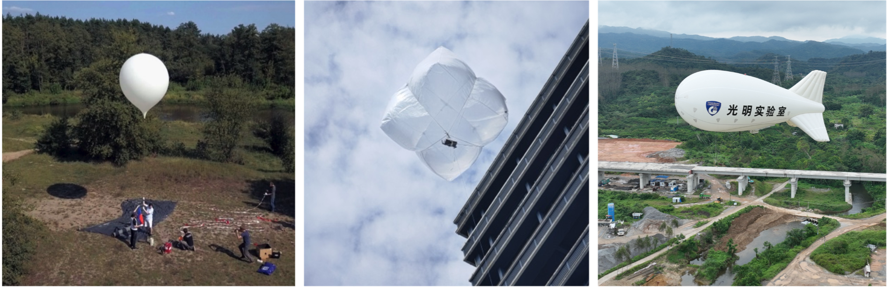

About the ValBal-Trajectory
本页面主要介绍关于高空气球的轨迹规划相关背景，目的是入门介绍和快速了解。
背景及意义
随着航空航天技术的快速发展，浮空器近年来逐渐成为环境监测、通信中继、气象探测、灾害评估以及科学实验等任务的重要载体，根据其有无动力分为两类。 动力浮空器通常指飞艇，无动力浮空器包括自由气球和系留气球，如下图所示的乳胶气球、高分子气球、低空系留气球为常见的小型浮空器。
其中乳胶气球以结构简单、部署灵活、成本低廉，观测区域范围大的优势受到科研院所的广泛关注。 然而传统的乳胶气球的应用模式多为一次性升空、被动漂浮，缺乏主动高度控制能力，难以满足指定区域长时间驻空观测的任务需求。 这种无法自主调整飞行高度的局限性，极大制约了其在实际任务中的应用范围与性能表现。 因此，研究并实现浮空器的主动高度调节，并进一步结合高度调控策略开展定点长时观测的飞行规划，具有重要的理论意义和现实应用价值。
主动高度调节
乳胶气球的高度控制本质上取决于对气球净浮力的调节。气球在高空中的垂直运动受到多种力的共同作用，主要包括气球所受的浮力、气动阻力以及系统总重力。 其中，气球总质量随着压舱物投放和气体排放而动态变化。气球的几何模型简化为球形，半径随内部气体的体积变化而变化，同时内部气体体积受气压和环境温度影响，需进一步建立热力学平衡方程进行精确建模。 此外，乳胶气球高度控制的执行机构模型也需要建立，主要包括：通过排气阀门控制气球内部气体排放速率，以减小浮力的排气机构模型； 通过压舱物投放装置控制压舱物释放速率，以增加净浮力的压舱物抛投模型。排气阀门和压舱物抛投机构的动态模型参数通过地面试验和历史飞行数据进行系统辨识。
定点通过任务路径规划
乳胶气球实现定点通过任务的关键在于精确、高效的轨迹规划与合理的初始发射配置。由于乳胶气球平台本质上为欠驱动系统，其水平运动主要依赖于高度调控并利用不同高度层的风场差异来实现。 因此轨迹规划问题可描述为：在给定预测风场数据条件下，通过动态调节气球高度，利用不同高度层风速风向的差异，使气球的水平运动轨迹经过预定目标点或目标区域，同时满足执行机构约束和其他任务约束（如飞行时间、能耗限制）。 具体而言，轨迹规划问题可表达为以下优化问题：
状态变量：经度、纬度、高度作为气球的三维位置状态，水平速度取决于对应位置高度的风场信息，垂直速度由高度控制器决定。
控制变量：通过排气和抛物实现对于气球净浮力的调节，进而影响气球的加速度、速度和高度。
约束条件：选择气球的高度活动区间，执行机构和初始发射区域作为约束条件。